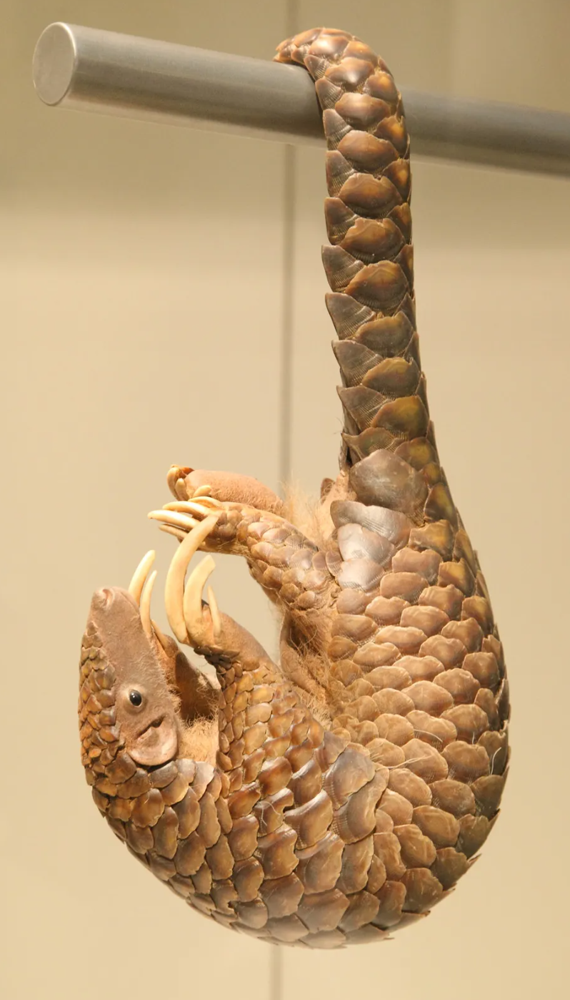

Native to Africa, this cat has the longest legs relative to its body size, which helps it achieve top speeds of up to 50 mph. Like the Fennec Fox (see below), its large ears provide it with acute hearing abilities. Serval Cats have been known to spend a significant amount of time with their eyes closed while hunting, in order to better hear their prey, and besides being able to purr like most cats, they’re also capable of chirping, hissing, meowing, grunting, and cackling.These bouncing animals come from the same family as kangaroos but differ specifically in size — they’re smaller than the kangaroo. There are 11 different species of wallaby. A baby is known as a “joey,” while an adult is known as a “boomer” or “buck” (if male) and “doe” or “jill” (if female). Wallabies feed on grass, foliage, and vegetables mainly, and congregate around watering holes during dry seasons.These foxes are typically found in Northern Africa and Saharan locations. Their large ears, which are likely the first thing most people notice, help them stay cool. They travel in packs, unlike most other foxes, and are also Algeria’s national animal. They’re also known as the smallest species of dog-like animals (canids) in the world, and because their ears are so large, they have an advantage when hunting for food, as they can hear their prey even if it’s underground.The name isn’t far off from what these animals are like in life — sugary foods are their preferred diet, and they have the ability to glide through the air, much like a flying squirrel. For them, gliding is not only a means of movement, but also a way to find food and evade predators. They are mainly found in parts of Australia, New Guinea, and Tasmania.The Patagonian Mara sort of resembles a rabbit, and is technically a part of the rodent family. They can be found in Argentina and live in a very particular mode of monogamy, though they sometimes breed in groups of up to 29 pairs. Partners are monogamous with each other unless one dies, after which the remaining one may find another partner. They distinguish each other based on territories marked either by themselves or by their partners.The Margay Cat lives throughout South America and Mexico and is related to Ocelots, which offer a striking resemblance; they’re sometimes known as “tree ocelots” because of their excellent climbing abilities. These cats spend most of their time in trees, instead of on the ground, and can jump up to 12 feet into the air. They’re also primarily nocturnal animals.Japanese Macaques (or Snow Monkeys) live in snowy climates, and can be found in Japan. They have red faces and brown/gray fur and tend to sleep in trees. These monkeys have been used in many studies for neuroscience, and have been known to develop interesting habits, including rolling snowballs for fun, and group bathing. They eat mostly fruits, nuts, and seeds.Another name for the Amur Leopard is the “Far Eastern Leopard,” likely attributed to the fact that they mainly inhabit areas of China and Russia. They’re distinguished by their thicker coat and spots, with cream-colored coats. They’re typically smaller in size when compared to other cats of their subspecies.

Pangolin comes from the Latin word “pengguling” which translates to “something that rolls up” — certainly true of this animal. The Pangolin can be found in tropical regions of Africa and Asia, and its scaled body is a distinct characteristic. Their front claws are so long that they aren’t conducive to walking, so they depend on their back legs for movement. Their scales also provide them with extra defense, since they’re sharp and long. They emit a smell very similar to a skunk, and they possess extremely long tongues that extend all the way into their abdominal cavity.Found mainly in Sri Lanka and parts of India, Sloth Bears have a mane around their face with slightly shaggier fur. The main difference between these furry beasts and their more familiar relatives (see: brown bears) is in their day-to-day behavior. Their long claws behave as feeding mechanisms, along with their lower lip and palate, which have adapted particularly well for eating insects.